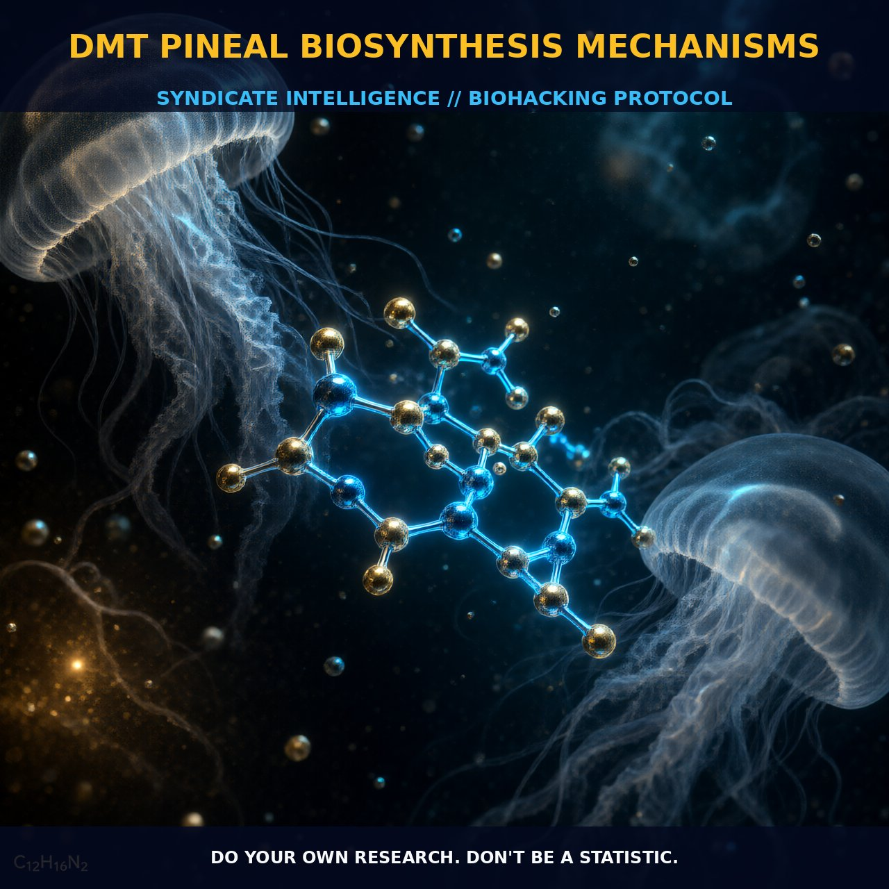

Mechanisms of DMT Biosynthesis in the Pineal Gland

1. The Mechanism
The mechanics of DMT biosynthesis in the pineal gland are intricately connected to enzymatic pathways that convert tryptophan, a common dietary amino acid, into DMT. The process begins with the decarboxylation of tryptophan by the enzyme aromatic L-amino acid decarboxylase (AADC), which forms tryptamine (TA).
Subsequently, the indolethylamine-N-methyltransferase (INMT) enzyme methylates TA to yield N-methyltryptamine (NMT). INMT further methylates NMT to produce DMT, with S-adenosylmethionine (SAM) acting as the methyl donor. This metabolic pathway highlights the importance of enzymatic activity and the interplay between metabolic pathways.
Studies indicate that INMT activity is notably high in the pineal gland, suggesting that this organ is a significant site for endogenous DMT production. The colocalization of AADC and INMT in the pineal gland is crucial for the rapid synthesis and release of DMT. The high levels of INMT in the pineal gland imply that this organ plays a pivotal role in DMT production, potentially modulating neurotransmitter activity and influencing brain function.
The enzymatic activity of INMT is crucial for DMT synthesis, as it methylates tryptamine to produce DMT. The Km values of INMT vary across different tissues and species, indicating that different isoenzyme forms may exist, each with distinct substrate affinities. This variability in INMT activity underscores the importance of enzymatic regulation in DMT synthesis, where product inhibition limits the amount of DMT that can be synthesized rapidly.
2. Biological Leverage
The biological leverage of DMT biosynthesis in the pineal gland is significant, as it potentially modulates neurotransmitter activity and neuroprotective functions. DMT is synthesized through the enzymatic pathway involving AADC and INMT, with the pineal gland acting as a primary site for DMT production.
The presence of DMT in pineal perfusates from freely-moving rats supports its biosynthesis and release, suggesting a role in modulating brain function. The high concentrations of INMT in the pineal gland and the presence of DMT in its perfusates imply that this organ plays a crucial role in the biosynthesis of DMT. While the pineal gland is a focal point, other brain areas and peripheral tissues also exhibit the necessary enzymatic components for DMT synthesis.
The potential role of DMT in neurodevelopment and neuroprotection suggests that its biosynthesis and release may influence neural activity and resilience. DMT's potential role as a neuroprotectant and its influence on brain patterning through 5-HT2A receptor activation indicate its broader impact on cognitive and perceptual processes. Understanding the precise mechanisms by which DMT is synthesized and released from the pineal gland and other tissues is essential for unraveling its physiological and therapeutic roles, providing insights into its potential benefits for mental health and cognitive function.
3. Tactical Implementation
For tactical implementation, understanding the dosing and timing of DMT administration is critical. While endogenous DMT is synthesized in small quantities, exogenous administration through smoking, intramuscular injection, or IV infusion can yield rapid and potent effects. Qualitatively, low-to-moderate amounts of DMT can be effective, with peak concentrations in blood within 10-15 minutes.
The metabolism of DMT is rapid, with only a small fraction of the administered dose being excreted as the parent compound in urine. The timing of DMT administration can be optimized for specific neurological effects, such as enhancing neuroplasticity or modulating neuroprotective pathways. Stacking DMT with compounds that support neurotransmitter activity, such as L-theanine or 5-HTP, may enhance its effects by modulating receptor activity and neurochemical balance.
Practical implementation should focus on understanding the individual's physiological response to DMT, considering factors like genetic variations in enzyme activity and potential interactions with other compounds. The rapid metabolism of DMT makes the timing and frequency of administration crucial. For instance, administering DMT in a fasting state may enhance absorption and bioavailability, maximizing its impact on neural activity.
The duration of DMT's effects is brief, typically lasting 30-60 minutes, making the timing of administration critical for achieving desired outcomes. Combining DMT with other neuromodulators or nootropics can provide synergistic benefits, such as enhancing cognitive clarity or reducing anxiety. The colocalization of AADC and INMT in the brain and peripheral tissues can be leveraged to support endogenous DMT production, potentially through dietary interventions that increase tryptophan availability or supplementation with precursors like SAM.
Prostar Life Hack
Understanding the precise timing and frequency of DMT administration can optimize its effects, enhancing neuroplasticity and neuroprotective pathways. Consider stacking DMT with L-theanine or 5-HTP for enhanced neurochemical balance.
[ AUTHOR: LEAD TECHNICAL RESEARCHER ]